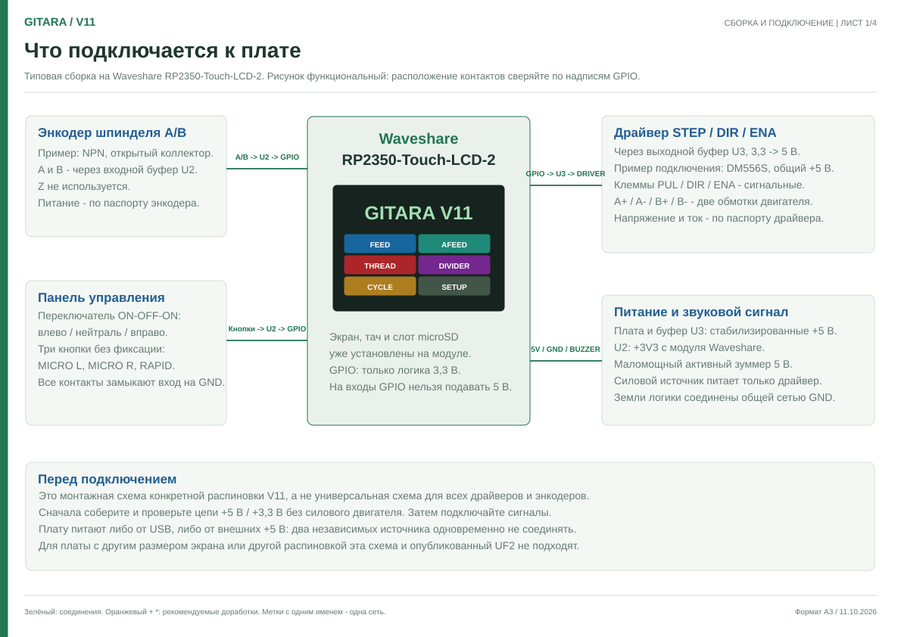

V11 · ВИРТУАЛЬНЫЙ ПРИБОР
Попробуйте меню.
Станок не нужен.
Нажимайте кнопки на экране, настраивайте механику и пробуйте подачу с виртуальным шпинделем.
Выберите режим на экране и переведите джойстик влево или вправо. Каретка начнёт двигаться.
Мышь и сенсорный экранМикроподача и RAPID действуют при удержании. RAPID больше 1 секунды в нейтрали обнуляет DRO и снимает лимиты; в DIVIDER обнуляет угол.
Выберите режим на экране прибора.
Как пользоваться
01 / ЭкранВсе меню открываются кнопками прибора. Для BF держите кнопку 1,2 секунды, для лимитов L/R — 2,2 секунды. Появится полоса удержания.
02 / ДвижениеFEED и THREAD следуют за шпинделем. AFEED и STEP работают независимо. Скорость FEED/AFEED можно менять на ходу; шаг THREAD/STEP — после остановки.
03 / НастройкаВ SETUP выберите строку и нажимайте −/+; удержание ускоряет изменение. SAVE сохраняет настройки только в этом браузере.
Плата прибора: Waveshare RP2350-Touch-LCD-2 ↗ · документация и распиновка ↗
СБОРКА СВОЕГО ПРИБОРА
От платы до станка
Схема для Waveshare RP2350-Touch-LCD-2: контакты GPIO, энкодер, кнопки, согласование сигналов, драйвер и питание. Рекомендуемые доработки отмечены оранжевым.
Схема подключения · PDF ↗Список деталей и контактов ↗